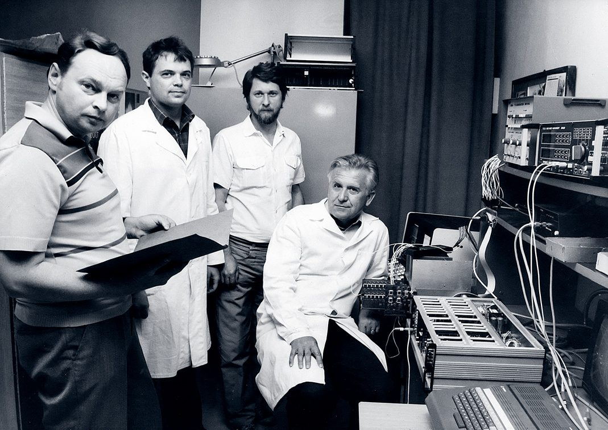
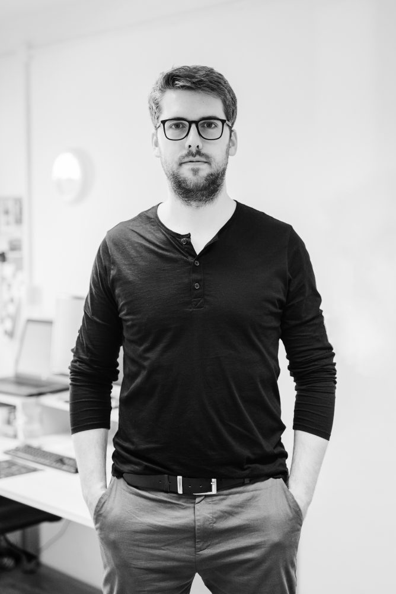

1957
The beginnings of the space program
The roots of space science in Košice trace back to the 1950s, closely tied to early cosmic ray observations and the construction of the space physics laboratory at the peak of Lomnický štít in 1957.

Our foundations were laid with pioneering cosmic ray research at Lomnický štít and integration into the international Interkosmos program. Today we design and build instruments for ESA missions, operate one of Europe’s longest cosmic-ray records, and apply machine learning to space-weather prediction.
To understand the physics of space — cosmic rays, space weather, and airglow — through measurements from the ground and from space, and to share that knowledge openly.
Our ambition is to be an excellent scientific lab at European level.
Half a century of building instruments and reading the cosmos — a continuous line from the first cosmic-ray observations to machine learning for space weather.
The roots of space science in Košice trace back to the 1950s, closely tied to early cosmic ray observations and the construction of the space physics laboratory at the peak of Lomnický štít in 1957.
Following the establishment of the IEP SAS, Košice physicists joined the Interkosmos program. The first instrument developed entirely within the department — the SK-1 gamma-ray and neutron detector — launched on 24 September 1977 aboard Interkosmos-17.
The DOK series of semiconductor detectors was deployed across many international missions — including Prognoz-8, Intershock, Active, Interball, and Magion — alongside the SONG instrument electronics aboard the Coronas satellites (1994, 2001).
The department expanded into theoretical modeling of cosmic ray propagation through the heliosphere and magnetosphere, and pioneered research on the links between space weather and cosmic ray fluxes. Integration with European labs accelerated with SLED-2 for the Mars-96 mission.
Collaboration expanded to the ESS communication processor for ESA's Rosetta, the NUADU energetic neutral atom imager for Double Star, the MEP-2 spectrometer for Radioastron, the PICAM ion mass spectrometer for BepiColombo, and the PEP package for JUICE.
The scientific portfolio expanded to ultra-high-energy cosmic rays (up to 10²⁰ eV) through the global JEM-EUSO collaboration. This milestone also introduced the study of airglow — the intrinsic emission of Earth's upper atmosphere — into the department's core research.
Machine learning became a cornerstone — automating the processing of massive imaging datasets and enhancing space-weather prediction. The department serves as Slovakia's leading expert institution for ESA's Space Safety Programme and is preparing datasets for the upcoming ESA Vigil mission, with cooperation in the KM3NeT collaboration.
The department inaugurated the first dedicated space cleanroom facility in Slovakia. Operating under ISO 7 standards with strict ESD protection and controlled temperature and humidity, it is optimized for developing, testing, and integrating spaceborne components in compliance with ECSS standards.
← Drag or scroll to move through the timeline →

Airglow · Space weather · Machine learning · Data science
mackovjak@saske.skResearch focus
jan.balaz@saske.skResearch focus
bobik@saske.skResearch focus
langer@saske.skResearch focus
strharsk@saske.skResearch focus
slavo@saske.skResearch focus
stefanik@saske.skResearch focus
kubancak@saske.skResearch focus
truska@saske.skResearch focus
fecko@saske.skResearch focus
usatiuk@saske.skResearch focus
hinzburh@saske.skResearch focus
dolinicova@saske.skResearch focus
stetiaro@saske.skResearch focus
kostarova@saske.skResearch focus
haneszova@saske.skResearch focus
villim@saske.skAffiliated institution
name@saske.skTechnical University of Košice
name@institution.orgPavol Jozef Šafárik University in Košice
name@institution.org